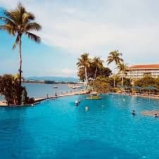

Sabah is the easternmost and second largest state in Malaysia, located on the legendary island of Borneo. So, if you are planning a travel to this state, here are some suggestions of the must-visit places for you to consider.
PLACES TO VISIT
SIPADAN ISLAND

- Sipadan is the only oceanic island in Malaysia, and one of its most spectacular
- You can see more oceanic marine life in its blue waters, such as over 3,000 fish species, turtles and hundreds of coral species
- Diving or snorkelling is a must-try experience when you are in Sipadan – you would not regret it!
MOUNT KINABALU
- High to 4,095 meters, it’s the highest point between the Himalayas and Papua New Guinea
- Travelers to Sabah immediately notice Kinabalu featuring on the state flag
- It holds both deep ties to local Kadazan-Dusun ethnic people and ancient paganism
- Keep your eyes open for the changing landscapes, flowers and wildlife.
SEPILOK ORANGUTAN REHABILITATION CENTRE
- This rehabilitation centre is known to give new life to orphaned orangutans before sending them back to the forests
- The reserve is inhabited by 200 orangutans who form the major highlight of this place
- Is risen because wish to see this rare animal species living in their natural habitat
LAYANG-LAYANG ISLAND
- Started out as a manmade base for the Malaysian Navy
- It later become an island resort, isolated enough for beautiful reefs to flourish
- Deep in the lagoon, you can find many fish species including stingrays, sharks and seahorses
PLACES TO EAT
KEDAI KOPI YEE FUNG
- One of the best and most popular laksas in Sabah
- An aromatic bowl of the widely sought after, and authentic Sarawak laksa! This should be enjoyed with a frothy cup teh tarik (pulled tea).
- Located at 127, Jalan Gaya, Pusat Bandar Kota Kinabalu, 88000 Kota Kinabalu, Sabah, Malaysia
WELCOME SEAFOOD RESTAURANT
- Mostly known for its fresh, cheap, and delicious seafood
- Is the most famous place to have some delicious and reasonably priced seafood
- Located at GF, G-15 - G-18 , Asia City , Jalan Coastal , Kota Kinabalu , 88000 Kota Kinabalu , Sabah, 88000, Malaysia
KAH HIONG NGIU CHAP
- Ngiu Chap (mixed beef soup), can be enjoyed in many ways, you could order yours served with vermicelli rice noodles, yellow noodles, or even just with plain white rice
- If you’re squeamish about eating other organs/parts offered here, your safest choice is to order the beef balls and the stewed meat!
- Located at Block B, Lot 14, Kedai Plaza Grand Millenium, Jalan Pintas, Donggongon, Penampang, 88200 Kota Kinabalu, Sabah, Malaysia
CAFES AT JALAN DEWAN
- If you are into cafes, check out the cafe scene at Jalan Dewan, a printer street converted into a cafe street at the edge of Kota Kinabalu City center
- Few notable cafes are October Coffee, Nook Cafe and Biru Biru Cafe where the backpackers hang out
PLACES TO STAY
GAYA ISLAND RESORT
- Has a unique setting: the land is fringed with a golden sandy beach, rocky coastal outcrops, and surrounded by coral reefs
- The hilly island landscape is covered with lush tropical rainforest and an abundance of flora and fauna, visible in the distance, is the stunning outline of Mount Kinabalu
- The guest villa exterior respects Sabahan architecture, uses local materials and blends harmoniously with the natural environment.
GRANDIS RESORT
- Grandis was named after Ascidieria Grandis (Eria Grandis), an endemic orchid found on Mount Kinabalu, Sabah
- Offering a range of different brands for tourists in order to cater various market demands
SHANGRI-LA'S TANJUNG ARU RESORT & SPA
- The contemporary rooms have been recently renovated to provide modern luxury and are situated in two separate wings overlooking the mountain or stunning South China Sea
- The resorts 2,000 sq. meter pool complete with tapered shoreline, jacuzzi beds and infinity section for adults provides a cool respite from the sun
- Meanwhile the renewed and iconic Sunset Bar offers the perfect spot for catching Borneos breathtaking sunsets
You also can check out this ig to read the review